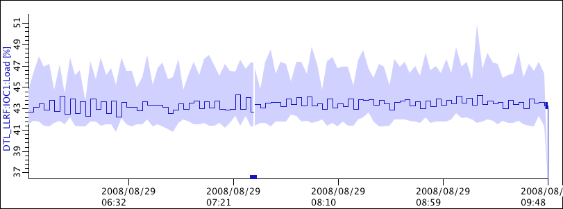
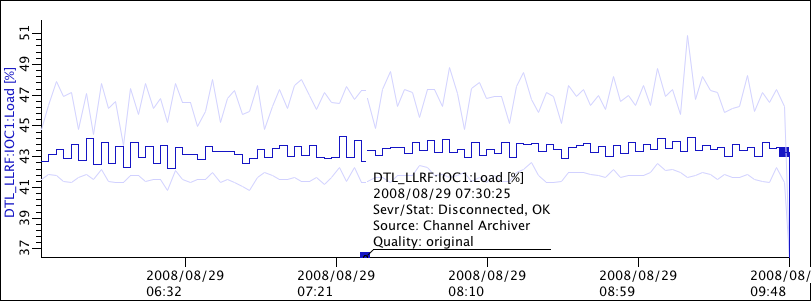
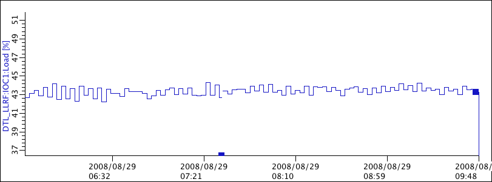
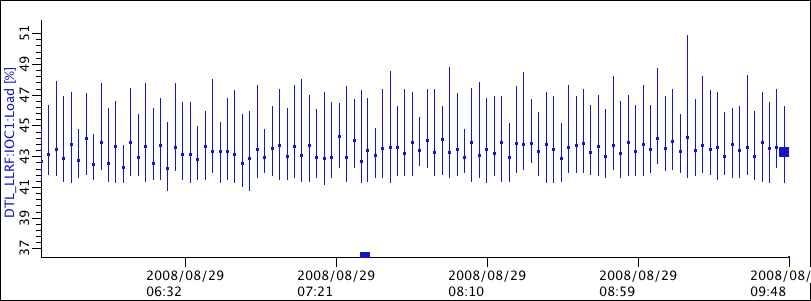
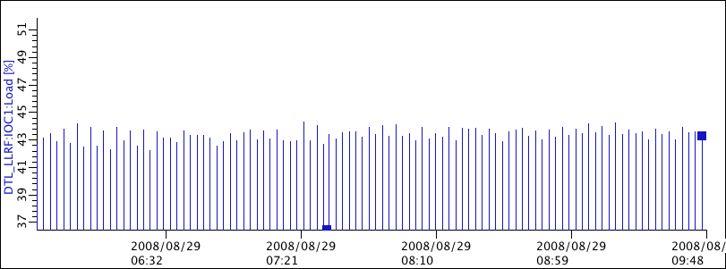

Data Display Types
The Config View allows the selection
of various "Display Types" for the data.
Area
This mode displays the numeric values of a PV with a staircase line.
If additional minimum/maximum information is available for the samples,
that min/max envelope is indicated by a shaded area.

Min/max info is typically obtained by using the "optimized" request type
and having a sufficiently large time range. See Request Types.
Boxes on the time axis indicate samples that have no numeric value.
By clicking on them, you add a Marker which will indicate if
the PV was for example "Disconnected", as shown in the next image.
There may be similar boxes on other samples, where again a marker will
provide the detail.
Lines
This mode displays the numeric values of a PV with a staircase line.
If additional minimum/maximum information is available for the samples,
that min/max envelope is indicated by a additional lines.
If there is no min/max information because we are already looking
at the 'raw' data, this is the same as the "Single Line" mode described next.

Single Line
This mode displays the numeric values of a PV with a staircase line.
It does not display additional minimum/maximum information,
and should be avoided because you might miss excursions in the actual
data by only viewing the averages.

Markers
This mode displays the numeric values of a PV with a marker.
Min/max info is displayed by lines.

Bars
This mode displays the numeric values of a PV with bars that always
start at the time axis.
It does not display additional minimum/maximum information,
and will only be useful in very few cases.
